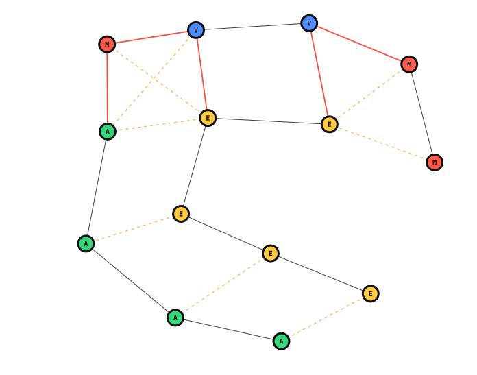

Friction Map
Every pairing on your team, ranked by risk. Built from the pairs that actually work together, based on overlapping functions rather than everyone against everyone, with the fix for each one.
RoleColor™ for Teams
RoleColorFinder maps every working relationship on your team, names the friction before it costs you a quarter, and tells you which profile to hire next.
Free10 questionsAbout 4 minutesNo card

Most teams don’t fail from a lack of talent. They fail from how they work together. Knowing your color is step one. Knowing what it does to the people around you is the point.
Level 1
Your RoleColor is your default way of leading, deciding and working with people. Your report ranks all four colors, not just the winner. Useful, and also where most tools stop.
Level 2
Where friction actually lives. Two good people with different thresholds for “ready” can stall a project without either one doing anything wrong.
Level 3
Every working relationship, mapped and ranked by risk, with the fix for each one and the profile that would close the gap.
Four profiles make ten pairings. Each has a name, a failure mode and a fix. This isn’t a mockup: it’s the same engine running inside the product.
Executor × Visionary
Blue keeps expanding the horizon while Yellow wants a stable target and a sequence to execute.
Blue often improves the idea while Yellow is already trying to ship it. Each person experiences the other as either premature closure or endless drift.
Most teams hire a résumé. Hire the gap instead. A team of brilliant Executors still misses what nobody in the room is built to see. Change the mix and the cost of the gap gets named.
Balance score
/100
High-friction pairs
Balance score 52 out of 100. 2 high-friction pairs.
57% Executor: execution-heavy. This group will move fast and close things out, but is likely to commit before the problem is fully framed and to under-invest in the structure that keeps it from recurring.
Best next hire
Visionary (new angles, reframing, and future-state thinking)
Watch
This group will move fast and close things out, but is likely to commit before the problem is fully framed and to under-invest in the structure that keeps it from recurring.
FixAdd Architect (Green) capability, or make one person accountable for the problem statement before work starts.
Watch
Nobody is naturally questioning the framing. This team will execute the plan it was given, including when the plan is wrong.
FixHire or move in a Blue, or bring an outside perspective into planning.
Watch
Speed trap × 2. Red wants to move now and Green wants to understand the system before committing.
FixCreate a short discovery window, then a hard decision window.
Inside the portal this runs against your real roster, and you can simulate a hire, a transfer or a departure before you make it.
Once everyone on the team has a color, the platform turns it into decisions: which pairs will clash, who to hire, who is ready to lead, and what changes when someone moves.
Every pairing on your team, ranked by risk. Built from the pairs that actually work together, based on overlapping functions rather than everyone against everyone, with the fix for each one.
Describe the problem in plain language and get back the role and the color, weighed against your real composition. It will tell you not to hire when the answer is a reshuffle.
AArchitect Green
Your team is execution-heavy. Add structure before you add speed, or make one person accountable for the problem statement before work starts.
A scored readiness shortlist with reasons and watchouts, and which leadership track is still uncovered.
A live balance score for every team and department. Simulate a hire, a move or a departure before anyone signs anything.
Role-fit analysis for every person, plus team-level strengths, risks and recommendations. Regenerated on demand.
A bot joins the call, transcribes it, matches each speaker to a person and tags the conversation with RoleColor signals.
Job postings, a public careers page, candidate assessments, interview scheduling, question generation and offers.
Look up a teammate’s profile or the team’s balance with a slash command, or ask a custom GPT.
Also in the box
Color describes how people work, not how well. Each profile is the reason someone is exceptional at part of the job and genuinely hard work in another. Reports rank all four, not just the winner.
EYellow
Closes the gap between deciding and doing. The person a stalled project gets handed to.
Cadence: clear handoffs, rapid execution loops
MRed
Moves people first and plans second. Makes a team believe the work is worth doing.
Cadence: live discussion, fast relational feedback
AGreen
Builds the structure everyone else quietly relies on. Wants order that survives scrutiny.
Cadence: time to think, validate and refine
VBlue
Questions the problem before solving it. Reliably asks the thing nobody else asked.
Cadence: wide exploration before narrowing
It’s adapting your strengths to what a team needs at each stage. RoleColorFinder is designed around Bruce Tuckman’s stages of team development, combined with organizational-psychology research on contextual and adaptive leadership.
Built by a multidisciplinary team spanning education, psychology, engineering and organizational design.
Tuckman (1965). Psychological Bulletin 63(6), 384–399. Forming, storming, norming, performing.
Tuckman & Jensen (1977). Group & Organization Studies 2(4), 419–427. Adds adjourning.
The insights were sharp, practical, and immediately actionable. This isn’t a personality quiz. It’s a decision tool.
RCF gave us instant clarity on roles and execution gaps. It saved weeks of trial-and-error.
Loved the simplicity and effectiveness of the test. It was engaging and focused only on leadership, which was interesting. I was quite intrigued by the accuracy of the results.
Anything else goes to contact@rolecolorfinder.com. We respond within 1 business day.
A patent-pending assessment platform built on real group psychology: Bruce Tuckman’s stages of team development. Static personality tests describe a person in isolation. RoleColorFinder shows how your style adapts across team contexts and stages, and maps what happens between pairs of people.
The free assessment is 10 questions and takes about four minutes. Premium is 25 questions and Pro Deep Dive is 50.
Yes. Everyone can take an individual assessment, or you can run the Team Program: group workshops, role mapping and a 12-week implementation plan.
The basic assessment is free. Premium is $124.99 and Pro Deep Dive is $199.99, both one-time payments with no hidden fees. Teams start at $12 per member per month.
Take the free assessment. Your results appear immediately, in full, not as a locked preview.
Yes. It’s built on Tuckman’s stages of team development and on organizational-psychology research into contextual and adaptive leadership.
For you
Ten questions across five dimensions. Your full report appears the moment you finish: no card, no trial that converts.
Take the free assessmentFree · 10 questions · about 4 minutes
For your team
RoleColor™ for Teams starts at $12 per member per month, billed monthly. Book a 20-minute call and see it on your own team.
Volume discounts for 50+ seats